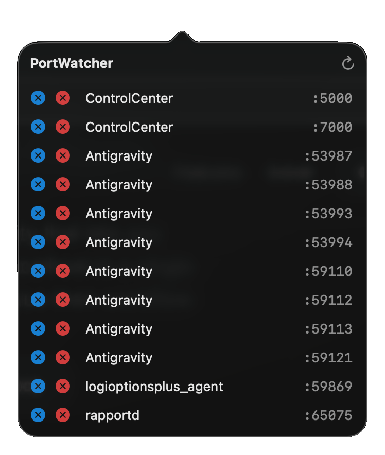

PortWatcher is a lightweight menubar utility that lets you identify and terminate process listening on localhost in a single click. Designed purely for developers who value their workflow.

Quit forgotten npm apps and background processes instantly.
Designed to perfectly replicate standard macOS system menus for a seamless, native feel.
Quit buttons are permanently visible. Use blue for SIGTERM or red for a forceful SIGKILL.
Automatically identifies parent applications like Visual Studio Code or Node.js instantly.
Download the pre-built DMG or build it yourself using our simple install script.